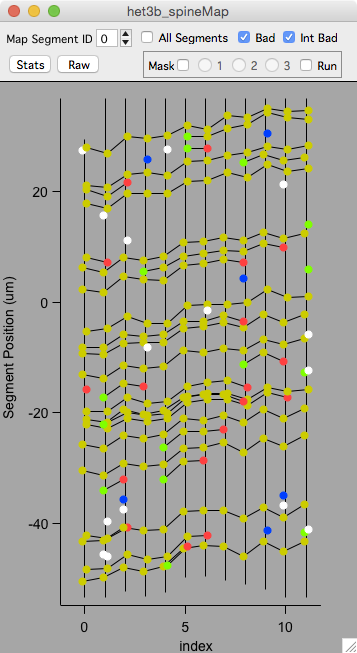
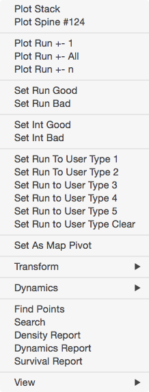
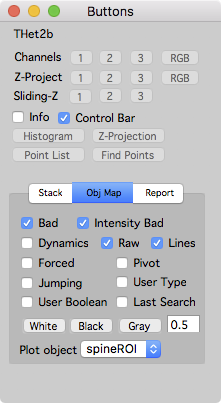
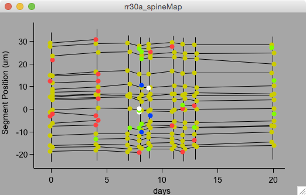
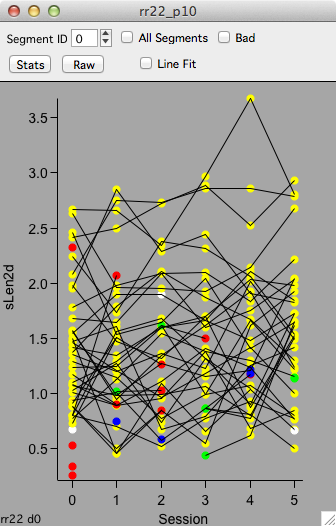
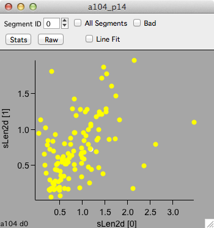

Map plot

A map plot shows annotations versus time-points. Annotations persisting from one session to the next are connected with a line.
Open a map plot from the time-series panel using the ‘Object Map’ and ‘Segment Map’ buttons.
Map plots are interactive
Selecting an annotation with a left-mouse click will select the annotation run in the map plot and propagate the selection to other map plots, stack plots, and stack windows.
Selected annotations appear as yellow circles, the run of an annotation appears as a yellow line.
Right-click an annotation to plot a run of stack plots.
Escape. Cancel all selections.
Arrow-keys. Pan the map.
Ctrl + Mouse-click/drag. Pan the map.
Ctrl + Mouse-wheel. Zoom the map.
Enter. Reset the map pan and zoom.
Colors
The colors of annotations in a map plot denote their dynamics.
- Green : Added
- Red : Subtracted
- Blue : Transient (1 session)
- Yellow : Persistent
- White : Bad
Top control bar
Toggle the top control bar on and off with keyboard c.
- Map Segment ID. Plot individual map segments.
- All Segments’. Plot all segment in a map. This is only used for spine annotations.
- Bad. Toggle display of annotations tagged as bad. By default, all bad annotations are shown in white.
- Int Bad. Toggle display of annotations tagged as intensity bad.
- Stats. Display a table of statistics (mean/sd/se/n) for plotted data.
- Raw. Display a table of raw data.
Right-click menu

- Plot Stack. Open the stack window containing the selected annotation.
- Plot Spine. Open a stack window and visually snap to and select the selected annotation.
- Plot Run. Open a run plot
- Set Run Good. Set the run to good.
- Set Run Bad. Set the run to bad.
- Set Int Good. Set the run to intensity good.
- Set Int Bad. Set the run to intensity bad.
- Set run to User Type 1. Set the run to user type 1.
- Set As Map Pivot. For ‘other’ ROIs, set the selected annotation as a map pivot. Plotting a run will use this to visually snap all stack windows in a run.
- Transorm. Tranform the Y-Axis values to: Raw (default), Absolute, Divided by, Percent, Norm 1, and Norm 2. For all selections other than Raw, the transformation will be done on the selected time-point.
- Dynamics. Used to automatically connect and disconnect annotations in the selected time-point.
- Find Points. Open the Find Points panel. Use this to browse connections between time-points.
- Search. Open the search panel. Use this to search annotations in a map.
- Density Report. Generate a density report. Use this to generate a table of spine counts and density per segment.
- Dynamics Report. Generate a dynamics report. Use this to generate a table of spine dynamics across time-points including number, %, and density added and subtracted.
- Survival Report. Generate a survival report. Use this to generate a table of spine survival as a function of the first session in a map.
- View. A submenu where view options can be toggled. For example, the dynamics colors can be turned off with ‘Dynamics’. See the buttons panel ‘obj map’ tab for a full set of options.

Buttons panel ‘Obj Map’ tab
Open the buttons panel from the main menu ‘MapManager - Buttons’.
Additional map overlays can be toggled in the ‘Obj Map’ tab. This includes bad, intensity bad, dynamics colors, and many more.
Examples
There are two special map plots provided in the time-series panel: Object Map and Segment Map.

This is an example of an ‘Object Map’ of spines showing the position of each spine on its dendritic segment. The lines connect persistent spines across time-points. Added spines are green, subtracted are red, and transient are blue. Spines tagged bad are in white. This plot is showing each time-point as a function of the day it was acquired with the first time-point being the zero day.
Open this kind of map plot in the time-series panel with the ‘Object Map’ button. Select the ‘X-Axis’ as ‘days’.

A map plot of spine length in μm (sLen2d) versus map session.
Open this kind of map plot in the time-series panel, ‘Intensity’ tab, ‘Spine Length’ button.

A map plot of spine length in μm (sLen2d) for time-point 1 versus time-point 0. Each point is the length of a single spine measured in session 0 (bottom axis) and again in session 1 (left axis).
Open this kind of map plot in the plot panel.
Keyboard
| Key | Result | |
|---|---|---|
| Navigation | ||
| Arrow-keys | Pan | |
| +/- | Zoom in/out | |
| ctrl + mouse-wheel | Zoom in/out | |
| enter | Full Zoom (reset zoom) | |
| Annotations | ||
| left-click | Select an annotation | |
| esc | Cancel selection (including masks) | |
| e | Edit plotted annotation values in a table | |
| Annotation Display | ||
| d | toggle dynamics coloring | |
| u | toggle user-type coloring | |
| f | toggle forced coloring | |
| r | refresh plot | |
| Control Bars | ||
| c | toggle top control bar | |
| i | open object info panel |